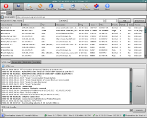

| Programa: | aMSN 0.97-2 |
|---|---|
| Web: | http://www.amsn-project.net/ |
| Instalador: | Instalar |
|
aMSN es un cliente de mensajería instantánea que utiliza el protocolo MSN y está publicado bajo la licencia GPL.
Su principal objetivo es ayudar a que los nuevos usuarios de GNU/Linux puedan seguir en contacto con sus conocidos, y proporcionar una alternativa eficaz a los usuarios de Windows. Para lograr sus propósitos aMSN imita la apariencia y el uso del MSN Messenger y admite muchas de sus características. También presenta particularidades que no incluye el cliente original, como por ejemplo alarmas, es muy configurable. Permite conectarse a varias cuentas a la vez, guarda en un historial las imágenes de usuario y (opcionalmente) las sesiones de webcam de todos los contactos. Soporta temas visuales (skins) y mantiene un historial de conversaciones. |
| Programa: | aMule 2.2.3 |
|---|---|
| Web: | http://www.amule.org/ |
| Instalador: | Instalar |
|  |
aMule es un programa de intercambio P2P libre y multiplataforma, similar al conocido eMule que funciona tanto con la red eDonkey como con Kademlia. El objetivo de aMule es ser un "eMule multiplataforma", funcionando actualmente en los sistemas operativos Linux, FreeBSD, OpenBSD, NetBSD, Solaris, Mac OS X y Windows, y en las arquitecturas x86, AMD64, UltraSPARC, PowerPC, Macintosh (G4, G5,...), Xbox y NSLU2. aMule admite enlaces magnéticos. |
| Programa: | Deluge 1.1.6 |
|---|---|
| Web: | http://deluge-torrent.org/ |
| Instalador: | Instalar |
|
Deluge es un cliente BitTorrent que puede usarse en cualquier sistema operativo que respete el estándar POSIX. En su etapa de desarrollo inicial, Deluge fue conocido como gTorrent, debido a que era un cliente BitTorrent para GNOME (la "g" en "gTorrent" se refiere a "GNOME"). Cuando la primera versión fue lanzada al público el 25 de Septiembre del 2006, el cliente fue renombrado a Deluge para evitar la implicación de que el cliente fuera solo para Gnome. |
| Programa: | Ekiga 3.0B2 |
|---|---|
| Web: | http://www.gnomemeeting.org/ |
| Instalador: | Instalar |
|
Ekiga, anteriormente llamado GnomeMeeting, es una aplicación de software libre para realizar videoconferencias y llamadas telefónicas por IP para GNOME o Windows. Permite todas las características modernas de una videoconferencia como soporte de proveedor inteligente o llamadas de teléfono desde el ordenador. Para su correcto funcionamiento debe disponerse de una cuentas SIP, que puede crearse gratuitamente desde ekiga.net. Por otro lado para poder realizar llamadas a teléfonos convencionales desde el PC se debe disponer de una cuenta con algún servidor de telefonía por internet. |
| Programa: | Firefox 3.0.8 |
|---|---|
| Web: | http://www.mozilla.com/ |
| Instalador: | Instalar |
|
Firefox es un navegador multiplataforma y está disponible en varias versiones de Microsoft Windows, Mac OS X, GNU/Linux y algunos sistemas basados en Unix. Cuenta casi la cuarta parte del mercado de navegadores web en marzo del 2009, por lo que es el segundo navegador más popular en todo el mundo. Para visualizar páginas web, Firefox usa el motor de renderizado Gecko, que implementa algunos estándares web actuales además de otras funciones. Incluye: - Navegación por pestanas - Corrector ortográfico - Búsqueda progresiva - Marcadores dinámicos - Administrador de descargas - Sistema de búsqueda integrado que utiliza el motor que desee el usuario. |
| Programa: | Pidgin 2.5.5 |
|---|---|
| Web: | http://www.pidgin.im/ |
| Instalador: | Instalar |
|
Pidgin (anteriormente llamado Gaim) es un cliente multiplataforma de mensajería instantánea capaz de conectarse a múltiples redes (multiprotocolo) y cuentas (multicuenta) de manera simultánea. Características principales: - Conversaciones mostradas en pestanas - Posibilidad de conectarse a varias redes simultáneamente - Registro de conversaciones - Permite el reemplazo de los nombres de los contactos de la lista - Avisos cuando un contacto se conecta/desconecta o cambia de estado - Posibilidad de transparencia para las ventanas de contactos y de conversación Protocolos soportados: AOL, ICQ,Google Talk,Jabber, MSN, Yahoo!, Bonjour, ... |
| Programa: | Qutecom 2.2Rc3 |
|---|---|
| Web: | http://www.qutecom.org/ |
| Instalador: | Instalar |
|
QuteCom (antes llamado WengoPhone) es un programa para comunicaciones VoIP via SIP desarrollado por la comunidad deQuteCom. Permite a los usuarios hablar sin coste con otros usuarios a de aplicaciones VoIP que utilicen protocolos SIP, llamadas a fijos, móviles, envío de SMS y videoconferencia. |
| Programa: | RSSOwl 2.0M9 |
|---|---|
| Web: | http://www.rssowl.org/ |
| Instalador: | Instalar |
|
RSSOwl es un lector RSS. Permite obtener, organizar, actualizar y almacenar información de cualquier fuente compatible. Entre sus capacidades se incluye la posibilidad de almacenar la información en distintos formatos para leerla fuera de línea o compartirla con otros. Es fácil de configurar y tiene varios lenguajes disponibles. |
| Programa: | Mozilla Thunderbird 2.0.0.21 |
|---|---|
| Web: | http://www.mozilla-europe.org/es/products/thunderbird// |
| Instalador: | Instalar |
|
Mozilla Thunderbird es un cliente de correo electrónico de la Fundación Mozilla. El objetivo de Thunderbird es desarrollar un Mozilla más liviano y rápido mediante la extracción y rediseno del gestor de correo del Mozilla oficial. Thunderbird soporta: - IMAP/POP - Correo HTML - Noticias - RSS - Etiquetas - Incluye corrector ortográfico - Soporte de extensiones y skins - Buscadores - Cifrado PGP - Filtro bayesiano de spam. |
| Programa: | WinSCP 4.2.1 |
|---|---|
| Web: | http://winscp.net/eng/docs/lang:es/ |
| Link de descarga: | http://winscp.net/eng/download.php/ |
| Link codigo fuente: | http://winscp.net/eng/download.php |
| Instalador: | Instalar |
|
WinSCP es un cliente SFTP gráfico para Windows para SSH y SCP. Su función principal es facilitar la transferencia segura de archivos entre dos sistemas informáticos, el local y uno remoto que ofrezca servicios SSH. |